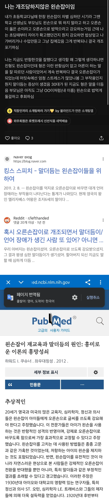

https://bbs.ruliweb.com/best/board/300143/read/76683414

* 왼손잡이를 오른손잡이로 억지로 교정하면 나타나는
대표적인 부작용으로 뇌신경계 혼란에 따른
말더듬 증세, 난독증이 있음.
이미 발달된 운동계와 대뇌반구의 기능적 비대칭을 강제로 일으키는 거라
교정 사례 대부분 임상적으로 유쾌하지 않은 모습들을 보였음.
https://bbs.ruliweb.com/best/board/300143/read/76683414

* 왼손잡이를 오른손잡이로 억지로 교정하면 나타나는
대표적인 부작용으로 뇌신경계 혼란에 따른
말더듬 증세, 난독증이 있음.
이미 발달된 운동계와 대뇌반구의 기능적 비대칭을 강제로 일으키는 거라
교정 사례 대부분 임상적으로 유쾌하지 않은 모습들을 보였음.
이탈리아인들 손 묶어놓으면 언어 구사력 떨어진다더니 비슷한가보네
맘마미아~
내가봤던 왼손잡이들은 양손잡이 되면서 공부예체능 다잘하는 성격좋은 인싸들이었음
젓가락 글씨 공던지기 왼손
마우스 오른손
왼손잡이들 바른손잡이 되라고 교정 많이했었는데 요새는 안하나보네
가끔 양손잡이되는애들 있는데 걔네는 똑똑하던데
와 저 썰대로면 어릴때 왼손잡이니까 반항적이네 소리들으면서 자랐겠네. 억까 지리노
말하기는 좌뇌 기능인데 오른손쓰게 했다고 말더듬 생기는 게 신기하긴 하네
존나 개소리 같은데
오른손잡이인데... 농구하다가 넘어져서 오른손 부러지고
한달간 왼손으로 젓가락질, 글쓰기도 다 했는데
나는 왜 말더듬이가 안됐지?
전쟁터에서 팔다리를 잃은 병사들이 많잖아
한 팔을 잃은 사람중에 절반은 주로 쓰는 팔을 잃었을테고
그 대부분은 강제로 반대손으로 교정당한 거나 마찬가진데
그 사람들이 말더듬이가 됐다는 말은 못들어봤는데?
일단 글 못읽는거보니 아직도 아픈건 맞는듯
성인이랑 성장중인 저학년 미성년자랑 같냐?
강요에 의해 바꾸는거랑 자기가 스스로 다친걸 인지하고 대안으로 바꾸는건 스트레스가 다르지 않을까.
내가 다리 부러져서 휠체어 타는건 불편해도 이게 그나마 다행이다 싶은데 두다리 멀쩡한데 다리 쓰지말고 휠체어 생활 하라면 홧병 돋을거 같은데.
강제교정하면 말더듬이 항상 100퍼 다 생기겠냐고...답답하네
글 보니까 넌 왼손잡이 였던거 같아
진짜 문해력 처참하다...
진짜 힘내라….
진짜 컨셉아니면 존나 깝~깝하긴 하다 ㅋㅋㅋ
현실에선 이렇게 지능낮은 것들이랑 말섞을 일이없는데 인터넷 공간에는 이런것들도 글을 쓰니 불쾌할 일이 많네
오른손잡이가 왼손으로 글씨쓰기/젓가락질 연습해도 말더듬 생기는 케이스 있음?
연습이 아니라 본인의사와 관계없이 주변의 시선때문인 케이스라잖아
옛날엔 왼손이였는데 젓가락질만 왼손 나머지는 오른손됨 근데 마우스나 글쓰는거 생각하면 꽤나 다행이라고 생각
그냥 양손잡이로 사는게 제일 좋은듯
난 피아노나 키보드처럼 양손 다 쓰는걸 내 아이한테 줘야지..
밥도 피아노로 멕여라
조카가 왼손잡이였는데 어릴 때 매형이랑 이모네 가족들이 오른손 쓰도록 엄청 다그치면서 개조했거든? 숟가락으로 손 치는 것도 봄. 결과적으로 말도 어눌하고 행동도 굼떠짐. 예전에 개드립 댓글에 왼손잡이 교정 때문에 조카 이렇게 된 거 같다고 적었다가 ㅈㄴ 면박 당했는데, 가능성 있는 거였잖아. 갑자기 억울하네
왼손잡이는 아닌데 원래 왼손 오른손 좀 섞어서 쓰는 편임
근데 손 쓰는 것이 언어 사용에도 영향을 주나?
아 어릴때 짜장면 먹다가 모르는 할아버지가 갑자기 "왼빼이네!" 하면서 머리 때렸는데 아직도 분하다 교정하려고 하지마라 씹새들아
양손으로 밥 처먹는 괴짜는 본거 같다
나도 교정 안 했는데, 존나 반항하거나 아니면 어른들이 걍 냅둠
지금도 거의 모든 걸 다 왼손으로 쓰는 중
난 오른손잡이임
근데 당구를 처음에 왼손으로 배움..아무도 지적 안하길래 원래 그런줄 알고 와 당구 존나 어렵네 하고 왼손으로 배움
결국 스위치타자됨 ㅠ
꼭 왼손/오른손잡이의 문제가 아니라 걍 특정 생활방식을 강요당해서 증상이 생긴거 아님? 왼손/오른손잡이가 뇌의 문제라서 같은 뇌의 문제인 말더듬 증상이 생겼다 라는 식으로 인과관계가 끼워맞춰진 느낌이네
제일 좆같았던게 옛날엔 왼손 야구 글러브가 구하기 어려워서 동네야구 할 때 왼손으로 공받고 글러브 팽개치고 왼손으로 던짐. 글러브를 큰거사서 어거지로 오른손에 껴보기도 함
주면도르는 양손잡이라서 부러웠는데 ㅋㅋㅋ. 밥먹을때 양손으로 먹는게 ㅋㅋㅋㅋ
젓가락 : 왼손
필기 : 오른손
ㅋㅋㅋ